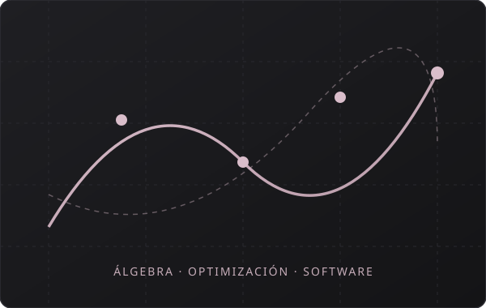

Matematicas
Dominio de fundamentos lógicos, cálculo, álgebra lineal y estadística aplicados a la resolución de problemas complejos, optimización y análisis de datos
Miguel Calderón
Estudiante de Matemáticas enfocado en álgebra conmutativa y análisis cuantitativo, con experiencia en desarrollo de software en Python, gestión de proyectos con Git/Github y diseño web. Apasionado por resolver problemas complejos combinando lógica abstracta, código eficiente y trabajo colaborativo.

Sobre mí
Desarrollador Junior y estudiante de Matemáticas con experiencia académica en matemática computacional y álgebra abstracta. Sólida formación en pensamiento lógico, análisis, abstracción y resolución de problemas, con capacidad para modelizar matemáticamente situaciones de la experiencia práctica y aplicar técnicas matemáticas para su resolución. Facilidad para aprender nuevas tecnologías, trabajar en equipo y afrontar retos que impliquen investigación, desarrollo y mejora continua.
Español [Nativo] - Inglés [B2]
Experiencia
De la etapa más reciente a la más antigua. Cada entrada dice qué hice y qué quedó funcionando después.
CampusLands Floridablanca
Main courses: Python, HTML & CSS, Git, GitHub, Scrum
Universidad Industrial de Santander
Main courses: Álgebra abstracta, Matemática computacional, Optimización
Colegio Integrado Madre de la Esperanza
vistazo a las tecnologías, herramientas y fundamentos analíticos que utilizo
Dominio de fundamentos lógicos, cálculo, álgebra lineal y estadística aplicados a la resolución de problemas complejos, optimización y análisis de datos
Desarrollo de algoritmos, análisis de datos y aplicaciones matemáticas con Python
Desarrollo de interfaces web claras, semánticas y responsivas usando HTML5, CSS3 y principios modernos de diseño centrado en el usuario
Cuéntame qué necesitas: un puesto, un proyecto o una colaboración. Te respondo con mi hoja de vida ampliada, referencias y disponibilidad real.
Escríbeme